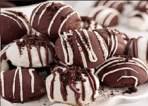
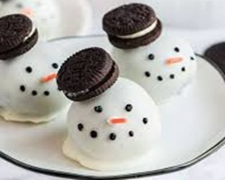

🍫Izzy's Oreo Truffles🍫
Oreo truffles are a firm favourite in my house, whether for a party, as a weekend treat or as a present. This is also a lovely and easy recipe, requiring only a handful of ingredients. Rich and chocolatey, this is a great bite-sized dessert that will go down a treat!
Ingredients
Equpiment
Method
- Use a food processor to crush the oreo cookies into crumbs. If you don't have a food processor you can place the oreos in a food bag and crush them with a rolling pin instead.
- Place the crushed oreos, holding back about 2 tablespoons, in a bowl and add the cream cheese. Mix until evenly combined.
- Line a tray, or something flat like a chopping board, with tinned foil. Then form small balls by rolling the mixture between your hands, and place them on the tin foil. You can choose the size, just remember they are quite rich, so I find traditional truffle size is best, but I make them smaller when I want to use them to decorate a cake and bigger if they are being used for a dessert.
- Place the truffles in the fridge and leave to slightly harden for 30-60 mins
- Just before taking the truffles out the fridge, melt the white and milk/dark chocolate in seperate glass bowls over simmering water until fully melted.
- Take the truffles out the fridge and coat half in the white chocolate and half in the milk/dark chocolate. I do this using two teaspoons and rolling the truffles one by one in the chocolate until coated. Then place back on the baking tray/chopping board. Once back on the tray, drizzle the alternate type of chocolate over the truffle and finish by sprinkling the remaining oreo crumbs, set aside at the start, over the top. Return the tray to the fridge for a couple of hours until hardened. Enjoy!



Variations
- 🍫Mint🍫 - Rather than using milk chocolate, try replacing with mint chocolate instead. You can also add half a teaspoon of peppermint extract to the cream cheese/oreo biscuit mix, if you likely things extra minty! Similarly this would work for any flavoured chocolate and flavouring, such as strawberry, but mint is my personal favourite!
- 🍹Boozy🍹- Try adding a splash, 1-2 tablespoons, of Baileys or Kahlua to the cream cheese/crushed oreo mix
- ☃️Snowmen☃️ - It's not just flavour you can play with, you can play with the design too! To make the truffles look more christmassy, make the truffle mixture as above and then coat them all in white chocolate - so 200g instead of 100g. Buy mini oreos and before the chocolate dries place the mini oreo on the top of the truffle at a slight slant, like a hat. Then place the truffles in the fridge. Once hardened, use a black icing writing pen to draw dots for eyes and a smile and an orange icing writing pen to draw a carrot nose.
